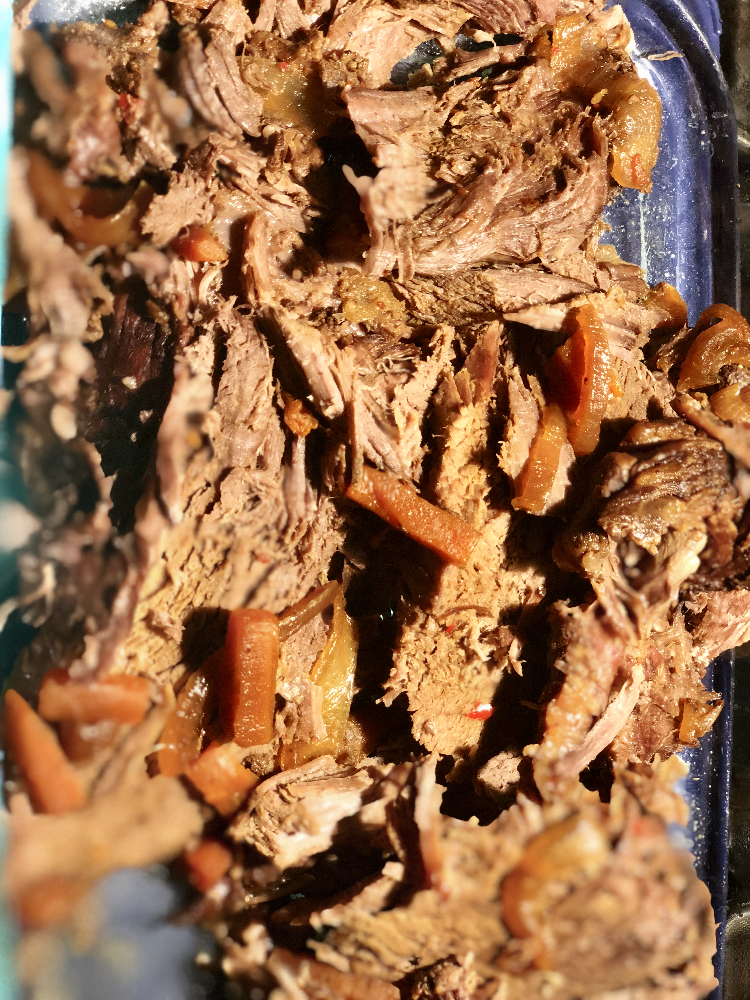

Slow Cooker Roast Beef Recipe

Description
This is the best pasta salad I've ever eaten, and people request it frequently. It's a very easy, light-tasting side dish for a picnic or dinner.
Ingredients
- 1 (2 pound) beef round roast
- 2 large carrots, chopped
- 1 large onion, thinly slices
- 2 stalks celery, chopped
- 1 teaspoon garlic powder
- ground pepper to taste
- 1/2 cup Worcestershire sauce
- 1/2 cup barbecue sauce
Steps
- Place beef round roast in slow cooker
- Add carrots, onion and celery
- Season with garlic powder and black pepper
- Pour Worcestershire and barbecue sauce over meat and vegetables
- Cook on Low until the meat is tender, 6 to 8 hours